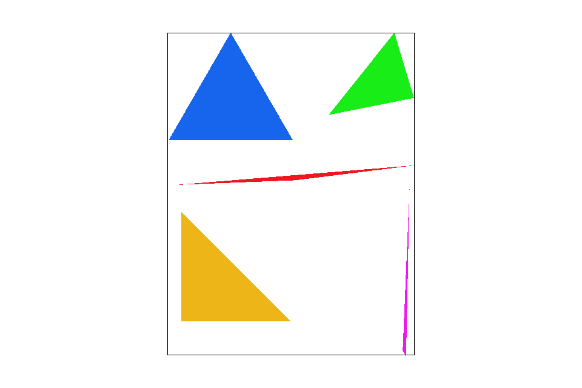

Overview
This is a rasterizer - given a set of coordinates will render an image to a flat screen. These coordinates can exist in a 3D space.
Section I: Rasterization
Part 1: Rasterizing single-color triangles
Primitive shapes are the cornerstone of computer graphics, especially in 3D modeling. The most valuable primative is definitely the triangle. What makes the triangle so great? Well it is the most basic polygon with a well defined interior. It's three vertices guarantee its planarity, making self-intersection impossible. Triangle rasterization is a core function in the graphics pipeline to convert input triangles into framebuffer pixel values.
Given three (x,y) coordinate points, we determine the bounding box we need to check.
In Part 1, triangle rasterization was implemented using Barycentric coordinate. Here is an example 2x2 gridlike structure using an HTML table. Each tr is a row and each td is a column in that row. You might find this useful for framing and showing your result images in an organized fashion.
|

|

|
Fantastic! We have the basics down. However, you may have noticed that these shapes seem rather jagged. These artifacts are due to a low-sampling rate, and are referred to as jaggies. How fix?
Part 2: Antialiasing triangles
Part 3: Transforms
Section II: Sampling
Part 4: Barycentric coordinates
Part 5: "Pixel sampling" for texture mapping
Part 6: "Level sampling" with mipmaps for texture mapping
Section III: Art Competition
If you are not participating in the optional art competition, don't worry about this section!